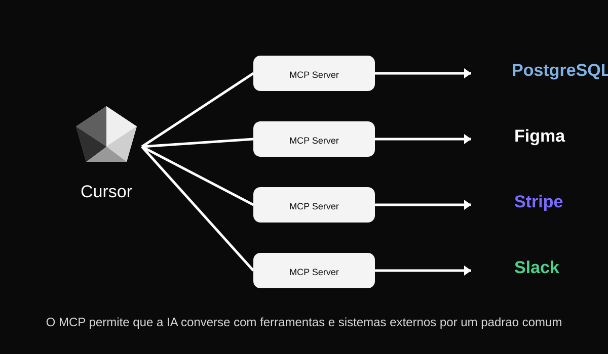

Entenda de forma simples o que é o MCP, como ele funciona na prática e por que ele se tornou importante no uso moderno de inteligências artificiais.

O MCP, sigla para Model Context Protocol, é um protocolo aberto criado para padronizar a forma como modelos de inteligência artificial se conectam a sistemas externos, como APIs, arquivos, bancos de dados e ferramentas corporativas.
Em vez de cada aplicação precisar criar uma integração diferente para cada serviço, o MCP propõe uma maneira comum de organizar essa comunicação. Isso torna o uso da IA mais prático, reaproveitável e escalável.
Em resumo, o MCP ajuda a IA a deixar de ser apenas um sistema que responde texto e passar a interagir com recursos reais.
Com o MCP, uma IA pode acessar ferramentas e informações externas de forma padronizada. Isso significa que ela pode entender melhor o contexto e executar tarefas mais úteis.
Alguns exemplos práticos:
Isso faz a IA deixar de ser apenas um chatbot e passar a atuar como um assistente mais conectado ao ambiente real de trabalho.
Um exemplo fácil de entender é o uso do MCP em ferramentas como o Cursor. Nesse tipo de editor, a IA não trabalha só com uma pergunta solta: ela pode acessar o contexto do projeto, ler arquivos e interagir com recursos ligados ao ambiente de desenvolvimento.
Na prática, isso permite que a IA:
Exemplo:
Usuário: analise este projeto e encontre possíveis erros no código.
IA: lê os arquivos relevantes, entende o contexto e sugere alterações mais precisas.
Esse tipo de experiência é uma das razões pelas quais o MCP ganhou destaque: ele ajuda a IA a trabalhar com contexto real, e não apenas com texto isolado.
É comum confundir MCP com API, mas eles não são exatamente a mesma coisa.
Ou seja, o MCP não substitui as APIs. Ele atua em um nível acima, ajudando a IA a interagir com múltiplos sistemas de forma mais organizada.
O MCP é importante porque torna a inteligência artificial mais útil em tarefas do mundo real. Em vez de apenas responder perguntas, ela pode consultar dados, acessar ferramentas e ajudar de forma mais concreta em fluxos de trabalho.
Com o crescimento dos agentes de IA, protocolos como o MCP tendem a ganhar ainda mais relevância.
Website pessoal em desenvolvimento - 2026